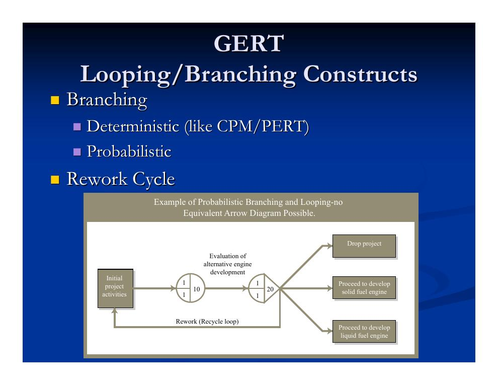
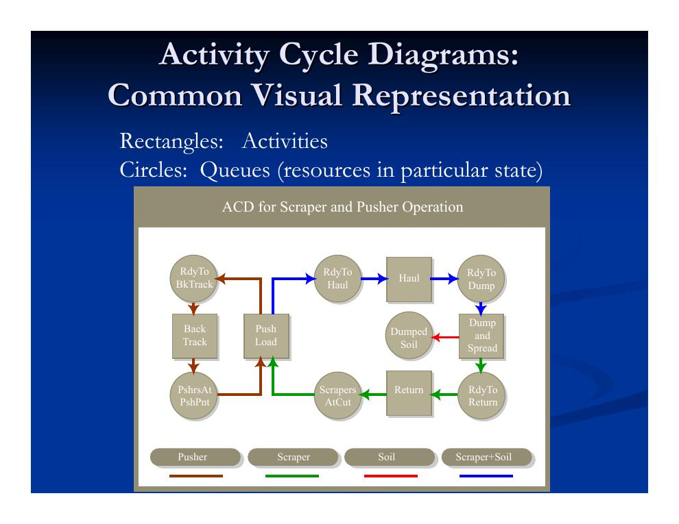
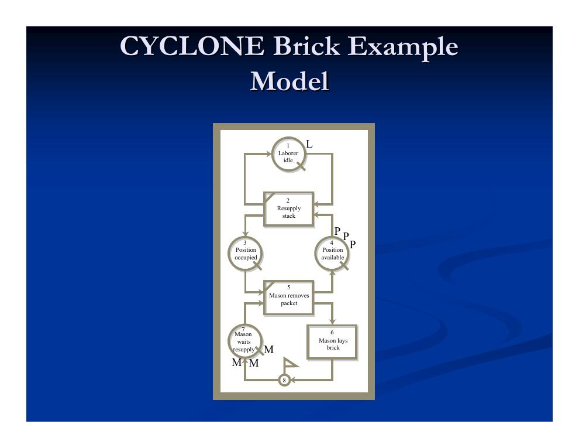
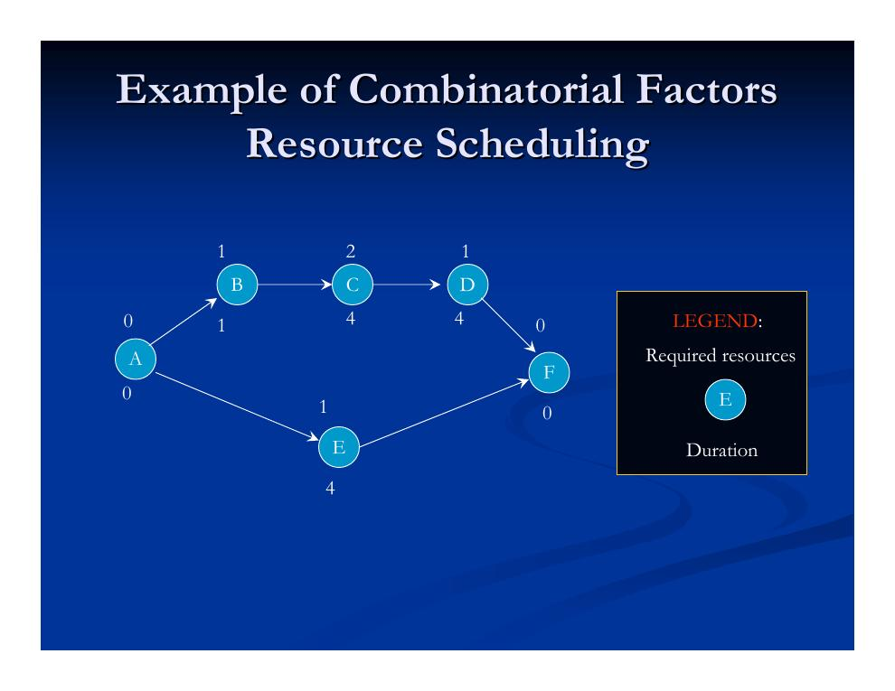
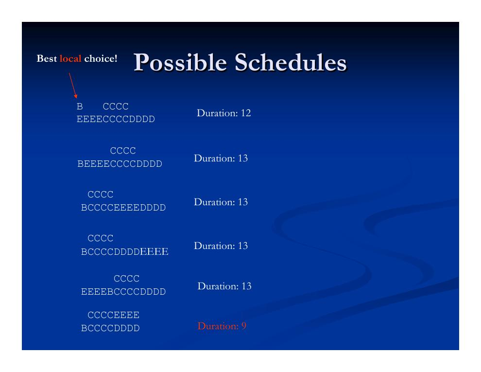
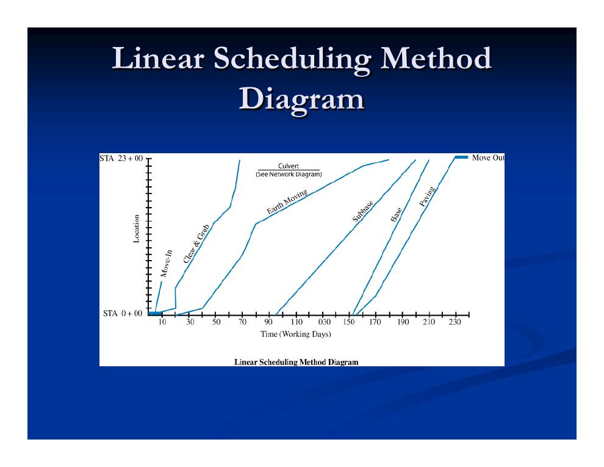
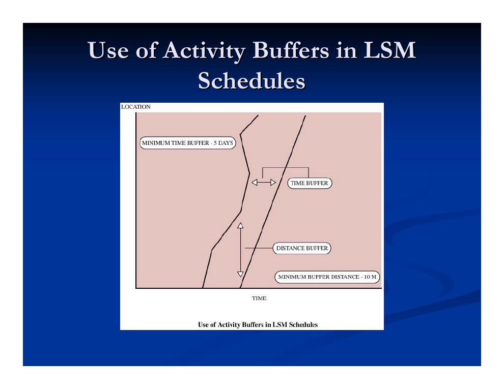

- Statische vs. dynamische Terminplanung und die Frage der Granularität
- GERT: probabilistische Netzpläne mit Verzweigungen und Schleifen
- Aktivitätszyklusdiagramme und Process-Interaction-Sprachen
- Activity Scanning: CYCLONE und das Maurer-Beispiel
- Ressourcen im Netzplan: Glättung vs. beschränkte Einplanung
- Optimale Verfahren und die kombinatorische Explosion
- Heuristische Verfahren: Prioritätsregeln, Burgess und SPAR
- Die Line-of-Balance-Methode für repetitive Projekte
Statische vs. dynamische Terminplanung und die Frage der Granularität
Bevor es um Simulationswerkzeuge geht, lohnt eine Grundsatzfrage: Wie viel des Ablaufs legt man vorab fest, und wie viel entscheidet man erst auf der Baustelle?
- Statische Terminplanung
- Termine stehen im Voraus fest. Das erleichtert die Koordination mit Projektbeteiligten und Nachunternehmern, und die Abstimmung kann vorgeplant werden (z. B. über ein Reservierungssystem). Nachteil: Frühe Fertigstellungen oder frühe Anlieferungen lassen sich nicht ausnutzen.
- Dynamische Terminplanung („Wait and See“)
- Entschieden wird situativ. Die dynamische Abstimmung kostet allerdings Zeit (es entstehen Warteschlangen) – dafür wird unnötiges Warten vermieden, wenn etwas früher fertig wird.
In der Praxis kommt beides zum Einsatz. Eng damit verknüpft ist die Granularität der Planung: Eine feinkörnige Planung (bis hinunter zu einzelnen Kolonnen oder Personen) erlaubt Aussagen über Kolonnenproduktivität, Lastausgleich zwischen Kolonnen und zurückgelegte Wege – sie ist aber kombinatorisch erheblich anspruchsvoller und kann die Kreativität der dynamischen Disposition vor Ort einengen. Faustregel der Vorlesung: Faktoren, die man statisch nicht sinnvoll durchplanen kann, überlässt man der dynamischen (oder „quasi-dynamischen“) Steuerung.
GERT: probabilistische Netzpläne mit Verzweigungen und Schleifen
Im Zentrum dieses Kapitels steht die ereignisdiskrete Simulation (Discrete Event Simulation). Ihr ältester Vertreter im Bauwesen ist GERT bzw. Q-GERT (Graphical Evaluation and Review Technique, entwickelt von Pritsker). Als gemeinsame Darstellungsform vieler Werkzeuge dienen Aktivitätszyklusdiagramme (Abschnitt 3); die Werkzeuge selbst zerfallen in zwei Familien: transaktionsbasierte („Process Interaction“) Ansätze wie SLAM und GPSS sowie Activity-Scanning-Ansätze wie CYCLONE und STROBOSCOPE. (Die Systemdynamik als weitere Simulationsgattung folgt erst in Lerneinheit 5.)
GERT baut auf Vorgangspfeil-Netzplänen (AOA) auf, gibt ihnen aber eine diskrete Ablaufsemantik:
- „Transaktionen“ (Entitäten) fließen durch das System und können weitere Transaktionen auslösen.
- Transaktionen müssen sich Ressourcen für ihre Bearbeitung sichern – und warten, bis die benötigten Ressourcen verfügbar sind.
- Das Modell ist durchgehend probabilistisch: Nicht nur die Dauern, auch Verzweigungen und Schleifen können zufällig sein. Damit läuft die Zeit im Diagramm nicht mehr zwangsläufig linear nach rechts!
Verzweigungen können deterministisch sein (wie in CPM/PERT) oder probabilistisch; das wichtigste Schleifenkonstrukt ist der Nacharbeitszyklus (Rework Cycle):

Ein solches Netz lässt sich zwar in eine aggregierte CPM-Darstellung überführen – dabei gehen aber gerade die Schleifen und Wahrscheinlichkeiten verloren. Q-GERT ergänzt Warteschlangen: Ein Warteschlangenknoten reicht Entitäten an ausgehende Aktivitäten weiter (denen eine Anzahl paralleler „Bediener“ zugeordnet ist), staut Objekte bis zu einer Kapazitätsgrenze auf und weist Ankömmlinge ab („Balking“), wenn die Kapazität erreicht ist; Kombinationselemente führen Transaktionen zusammen. Aus dieser Linie entstanden später GASP und SLAM. Dokumentierte GERT-Anwendungen reichen von Offshore-Bohrinseln (Granli) über die Alaska-Pipeline bis zum Talsperrenbau (Peña-Mora).
Aktivitätszyklusdiagramme und Process-Interaction-Sprachen
Die verbreitetste visuelle Darstellung ereignisdiskreter Baumodelle ist das Aktivitätszyklusdiagramm (Activity Cycle Diagram, ACD): Rechtecke stehen für Aktivitäten, Kreise für Warteschlangen – also Ressourcen in einem bestimmten Zustand. Das Standardbeispiel der Vorlesung ist ein Erdbaubetrieb mit Schürfkübelraupen (Scraper) und Schubraupen (Pusher):

Process-Interaction-Sprachen (Beispiele: SLAM, GPSS, ProModel, SimScript, ModSim) beschreiben ein System als Fluss von Transaktionen, die Ressourcen („Maschinen“) belegen und wieder freigeben. Sie bewähren sich in „Werkstattfertigungs“-Situationen (Job Shops), in denen klar identifizierbare Objekte durch das System wandern und Ressourcen vorübergehend beanspruchen. Im Bauwesen zeigen sich jedoch Schwächen:
- Es ist oft knifflig zu entscheiden, was die „Transaktion“ ist – die übrigen Entitäten lassen sich dann nur umständlich abbilden.
- Der Perspektivwechsel auf eine andere Entität ist schwierig.
- Während der Simulation drohen Verklemmungen (Deadlocks), wenn Transaktionen sich gegenseitig Ressourcen streitig machen.
Activity Scanning: CYCLONE und das Maurer-Beispiel
Die zweite Familie, das Activity Scanning, orientiert sich direkt an den Aktivitätszyklusdiagrammen: Statt Transaktionen zu verfolgen, prüft die Simulation fortlaufend, welche Aktivitäten ihre Startbedingungen erfüllen. Neben Universalwerkzeugen gibt es bauspezifische Sprachen – vor allem CYCLONE und dessen Weiterentwicklung STROBOSCOPE. Die Modellbausteine von CYCLONE:
| Element | Funktion |
|---|---|
| Kombinationsaktivität (COMBI) | Steht stets hinter Warteschlangenknoten. Sie kann erst beginnen, wenn in jeder vorgelagerten Warteschlange Einheiten verfügbar sind; dann werden diese kombiniert und verarbeitet. Fehlen Einheiten in einzelnen Warteschlangen, warten die übrigen, bis die Kombinationsbedingung erfüllt ist. |
| Normalaktivität (NORMAL) | Wie COMBI, jedoch ohne Wartebedingung: Eintreffende Einheiten werden sofort und ohne Verzögerung verarbeitet. |
| Warteschlangenknoten (QUEUE) | Steht vor jeder COMBI-Aktivität und ist der Ort, an dem Einheiten bis zur Kombination verweilen; hier werden die Wartezeitstatistiken erfasst. |
| Funktionsknoten (FUNCTION) | Übernimmt Sonderfunktionen wie Zählen, Konsolidieren, Markieren und Statistikerfassung. |
| Akkumulator (ACCUMULATOR) | Legt fest, wie oft das System seinen Zyklus durchläuft. |
| Pfeil (ARC) | Beschreibt die logische Struktur des Modells und die Flussrichtung der Entitäten. |
Das Lehrbeispiel: eine Maurerkolonne mit 3 Maurern und 1 Bauhelfer; das Gerüst fasst 3 Paletten zu je 10 Ziegeln. Der Bauhelfer füllt das Ziegellager auf, die Maurer entnehmen Pakete und vermauern die Ziegel:

Im zugehörigen CYCLONE-Programmtext wird jedes Element eine Codezeile; die Dauern der Aktivitäten „Auffüllen“ und „Vermauern“ sind als Beta-Verteilungen hinterlegt – die Verteilungsannahme aus der PERT-Welt (Kapitel 4.2) kehrt hier also auf Prozessebene wieder, während die Paketentnahme eine feste Dauer hat.
Ressourcen im Netzplan: Glättung vs. beschränkte Einplanung
Zurück zur Netzplantechnik. Deren Grundablauf (aus Kapitel 4.1) lautet: Vorgänge aus den Arbeitspaketen des Projektstrukturplans ableiten, Kosten, Zeit und Ressourcen je Vorgang schätzen, Anordnungsbeziehungen festlegen – und dann iterieren: CPM-Terminrechnung durchführen, Zeit-, Kosten- und Ressourcenverbrauch über die Projektlaufzeit abschätzen, bei Bedarf Abhängigkeiten oder Ressourcen anpassen. Der entscheidende Haken: Die CPM-Rechnung unterstellt implizit „unendliche Ressourcen“. Trägt man den Ressourcenbedarf des Terminplans über der Zeit auf (das sogenannte Resource Loading, dargestellt als Belastungshistogramm), zeigt sich schnell, ob der Plan die verfügbaren Kapazitäten sprengt.
Welche Ressourcen sind kritisch?
- Personal ist am wichtigsten: Die Beschaffung braucht Zeit, Freisetzen ist schwierig, kurzfristiges Wiederholen ebenso – und jedes Gewerk ist als eigener Ressourcentyp zu behandeln.
- Geräte: Hochspezialisierte Geräte sind knapp; Standardgeräte lassen sich vergleichsweise leicht bedarfsgerecht beschaffen. Randbedingungen wie Genehmigungsfragen sind zu beachten.
- Ressourcenglättung (Resource Leveling)
- Vorgänge werden innerhalb ihrer Puffer verschoben, um Schwankungen des Ressourceneinsatzes zu minimieren – die Projektdauer bleibt unverändert! Besonders wichtig für Personal. Achtung: Es gibt keine Garantie, dass der geglättete Bedarf innerhalb der tatsächlich verfügbaren Kapazität liegt.
- Ressourcenbeschränkte Einplanung (Resource Scheduling, „Constrained-Resource Scheduling“, „Limited Resource Allocation“)
- Die Vorgänge werden so eingeplant, dass die Kapazitätsgrenzen eingehalten werden – bei möglichst geringer Verlängerung der Projektdauer.
Optimale Verfahren und die kombinatorische Explosion
Ressourcenglättung und -einplanung optimal zu lösen ist ein kombinatorisches Problem und rechnerisch extrem teuer (NP-vollständig): Im Prinzip müsste man alle möglichen Reihenfolgen konkurrierender Vorgänge vergleichen. Die Intuition dahinter: Innerhalb der Randbedingungen gibt es sehr viele mögliche Start- und Endzeitpunkte – typischerweise zu viele, um sie aufzuzählen – und die lokal beste Entscheidung ist nicht unbedingt global die beste. Als exakte Ansätze kommen lineare Programmierung, vollständige Enumeration und „Branch and Bound“ (beschränkte Suche) infrage.
Wie tückisch lokale Entscheidungen sind, zeigt ein kleines Beispiel: sechs Vorgänge, von denen B, C, D und E um eine knappe Ressource konkurrieren.


Auch die Zuordnung von Kolonnen zu Vorgängen lässt sich exakt formulieren – etwa für elf Bauabschnitte (A–K mit Arbeitsdauern zwischen 5 und 9 Tagen), die auf mehrere Kolonnen zu verteilen sind, als ganzzahliges Programm (Integer Programming):
Minimiere z unter den Nebenbedingungen:
z ≥ Σi = 1…nAbschnitte ti · xij für jede Kolonne j (z deckt die Arbeitslast jeder Kolonne ab)
Σj = 1…nKolonnen xij = 1 für jeden Abschnitt i (jeder Abschnitt genau einer Kolonne zugewiesen)
Heuristische Verfahren: Prioritätsregeln, Burgess und SPAR
Weil die exakte Lösung praktisch meist unerreichbar ist, arbeitet man mit Heuristiken – Faustregeln, die in akzeptabler Zeit eine gute (aber typischerweise nur lokal optimale) Lösung liefern. „Gierige“ (greedy) Algorithmen tun in jedem Schritt das lokal Beste, das global nicht das Beste sein muss; beurteilt werden Heuristiken in der Regel empirisch. Manche sind hochgradig problemspezifisch (z. B. SPAR), andere sehr allgemein (Branch and Bound, Simulated Annealing, genetische Algorithmen). Zwei Grundstrategien:
- Serielle Verfahren planen Vorgang für Vorgang: die priorisierten Vorgänge der Reihe nach so früh wie möglich einplanen. Seltener verwendet.
- Parallele Verfahren planen Zeitschritt für Zeitschritt: Ausgehend von einem Anfangsplan wird je Zeitschritt entschieden, welche Vorgänge verschoben werden – laufende Vorgänge werden dabei nicht mehr angetastet (lokale Optimierung), entschieden wird anhand der Eigenschaften der jeweils anstehenden Vorgänge. Am gebräuchlichsten.
Typischer Ablauf einer heuristischen Ressourceneinplanung: Prioritäten vergeben – etwa nach den Regeln „kürzester Vorgang zuerst“, „größter Ressourcenbedarf zuerst“, „kleinster Puffer zuerst“ (Minimum Slack), „meiste kritische Nachfolger“ oder „meiste Nachfolger“ – und jeden Vorgang erst starten, wenn seine Vorgänger abgeschlossen sind und ausreichend Ressourcen verfügbar sind.
Die empirische Vergleichsstudie von Patterson und Davis (1975) testete zahlreiche Regeln in seriellem und parallelem Modus (u. a. frühester späterer Endtermin, Kombinationen aus EF und LS, größter Ressourcenbedarf, minimaler Ressourcenleerlauf, kürzeste Dauern, meiste Vorgänge, zufällige Auswahl, minimaler Puffer). Ergebnis:
- Am wirksamsten: minimaler Puffer (gleichbedeutend mit minimalem spätestem Start) und minimaler spätester Endtermin.
- Selbst die besten Regeln verfehlen das Optimum in 60 % der Fälle.
- Die Wahl seriell vs. parallel kann wichtiger sein als die Prioritätsregel selbst.
Glättungsheuristik nach Burgess (für die Ressourcenglättung): Die Vorgänge werden entgegen der Anordnungsreihenfolge sortiert und zunächst auf ihre frühesten Starttermine gelegt. Dann wird iteriert, bis die Summe der Quadrate des Ressourceneinsatzes nicht mehr sinkt: Jeder Vorgang wird in Sortierreihenfolge auf den Zeitpunkt gelegt, der – unter Einhaltung der Anordnungsbeziehungen – die Quadratsumme minimiert. Bei stark kritischen Ressourcen wiederholt man das Verfahren mit anderer Anfangssortierung; zum Schluss werden ausgelassene Faktoren manuell nachjustiert.
Beispielalgorithmus für die ressourcenbeschränkte Einplanung:
- 1. Alle Ressourcen von der wichtigsten zur unwichtigsten ordnen.
- 2. Den geplanten Start jedes Vorgangs auf seinen frühesten Starttermin setzen.
- 3. Ab t = 0 den Bedarf an Ressource i berechnen.
- 4. Übersteigt der Bedarf die Verfügbarkeit, den Vorgang mit dem größten spätesten Start auswählen und seinen Start auf t + 1 verschieben.
- 5. Schritt 4 wiederholen, bis die Ressourcenrestriktion für i zum Zeitpunkt t eingehalten ist.
- 6. Mit t = t + 1 fortfahren (zurück zu Schritt 4).
- 7. Das Ganze für die nächste Ressource i + 1 wiederholen (zurück zu Schritt 3).
Der SPAR-Algorithmus geht über einfache Gier-Strategien hinaus: Er ordnet Aufträge probabilistisch zu (und findet so mehrere lokale Minima), überdenkt frühere Entscheidungen und darf sogar den kritischen Pfad verändern (Verzögern von Aufträgen oder Ressourcen zugunsten kritischer Vorgänge). Angenommen wird ein linearer Zeit-Ressourcen-Tausch, d. h. konstante Personentage je Vorgang. Kritische Ressourcen werden für eine höhere Zuteilung in Betracht gezogen: Nötigenfalls werden Ressourcen von bereits eingeplanten Aufträgen ausgeliehen – aber nur, wenn sich das Gesamtprojekt dadurch nicht verlängert – und im äußersten Fall werden andere laufende Aufträge verzögert.
Die Line-of-Balance-Methode für repetitive Projekte
Für repetitive Vorgänge, die von derselben Kolonne in gleichbleibender Abfolge über viele Abschnitte ausgeführt werden, bietet sich die Line-of-Balance-Methode (LOB, auch Linear Scheduling Method, LSM – Planung mit Fertigungslinien) an. Sie stellt den Arbeitsfortschritt je Vorgang als Linie im Orts-Zeit-Diagramm dar, macht die Fortschrittsrate (Steigung) sichtbar und zielt darauf, Unterbrechungen im Einsatz der Kolonnen zu minimieren. Genutzt wird sie zur Planung der Kolonnen-Wiederverwendung sowie von Zeitpunkt und Geschwindigkeit der Arbeiten.

Die Planungsschritte der LOB: Kolonnen dimensionieren („Design Crews“), Aufgaben je Kolonne festlegen, die Gewerkefolge bestimmen (nach Ort oder Arbeitsart), die Route über die Baustelle planen – und Puffer zwischen den Gewerke-Kolonnen vorsehen. Da sich die Fortschrittslinien zweier Gewerke nicht kreuzen dürfen (Vorgangsstörung, „Activity Interference“), werden Mindestabstände definiert:

Stärken und Schwächen im Überblick:
- Vorteile: einfacher aufzustellen als Netzpläne und informativer als Gantt-Diagramme; grafisch ablesbar sind Fortschrittsrate, Vorgangsdauern, Ressourcenzuordnungen, Kalendertermine und das Konfliktrisiko zwischen Kolonnen. Die LOB ergänzt die Netzplantechnik bei Projekten mit repetitiven und diskreten Anteilen; aus ihr lassen sich Personalhistogramme (Resource-Loading-Diagramme) ableiten, Ressourcen ausbalancieren und Erlöskurven entwickeln.
- Nachteile: weniger wirksam, wenn die Arbeit regelmäßig unterbrochen wird oder die Vorgänge nicht an allen Orten derselben Reihenfolge folgen; Mindestabstände und Puffer sind schwer zu bestimmen; horizontaler und vertikaler Baufortschritt lassen sich schlecht gleichzeitig darstellen.